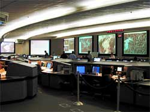

The FAA Command Center (source:caasd.org)
Why indeed was Delta 1989 believed to be hijacked? And who was the source for this misinformation? The answers appear to change everytime when a new report on the aircraft is published.According to USA Today (2002), the FBI was the source. Delta 1989 simply fit the "hijack profile" of American 11 and United 175 (i.e. a Boeing 767 from Boston going from East Coast to West Coast).http://www.usatoday.com/news/sept11/2002-08-12-hijacker-daytwo_x.htm
The 9/11 Commission Report (2004) mentions the same reason (the hijack profile), but identifies Boston Center as the source. Just recently, Commission staffer Miles Kara has repeated this version.http://www.oredigger61.org/?cat=18
But Colin Scoggins, the controller from Boston Center who called NEADS to warn them about Delta 1989, explains in an interview from 2007 that the plane became suspicious because it missed a frequency transfer from Boston Center to Cleveland Center:http://sites.google.com/site/911guide/cs2Lynn Spencer ("Touching History", 2008) also mentions a failed frequency transfer, but this time within Cleveland Center (i.e. from sector to sector).http://911woodybox.blogspot.com/2009/07/lynn-spencer-spreads-misinformation-on.htmlSomething doesn't add up here.But here's a document that expels all of these accounts into the land of hearsay. It's the written account of Colin Scoggins, the said Boston Center controller, from 9/20/2001. According to Scoggins, it was the FAA Open Teleconference which was established by the Command Center after Flight 11 was reported being hijacked:
Open TELCON reports that DAL1889 is NORDO in ZOB airspace. ASD indicates aircraft is near Cleveland.
Call NEADS to advise of DAL1889, possible hijack.
http://www.scribd.com/doc/13950342/T8-B3-Boston-Center-Colin-Scoggins-Fdr-Chronology-of-Events-and-FAA-Personnel-Statement-Wasnt-in-a-Rush-Went-to-the-Credit-Union-First
In plain language: One participant of the teleconference reported that Delta 1989 (Scoggins remembered the flight number incorrectly) had lost radio contact while flying over Cleveland.
Here are three annotations to this surprising message:
1 - Delta 1989 was never out of radio contact, i.e. the message is flagrant misinformation.2 - it's Scoggins 2001 vs. Scoggins 2007; when determining which account is more reliable, just look at the date. Memories use to be more accurate after nine days than after six years.3 - who participated on the teleconference? At least the FAA Command Center and the three facilities Boston Center, New York Center and Cleveland Center, if we follow the 9/11 Commission. Cleveland Center was in continous contact with Delta 1989, Boston Center and New York Center were not responsible for Cleveland Center airspace. Therefore these three facilities are out of the question when it comes to the source of the misinformation.Is there any reason that someone at the Command Center spreaded misinformation on the teleconference? Just note that Scoggins was not a regular air traffic controller, but the military liaison at Boston Center, and that there was a military liaison (or military cell) at the Command Center, too, who also participated in various teleconferences. This needs further research.
{kind=link}